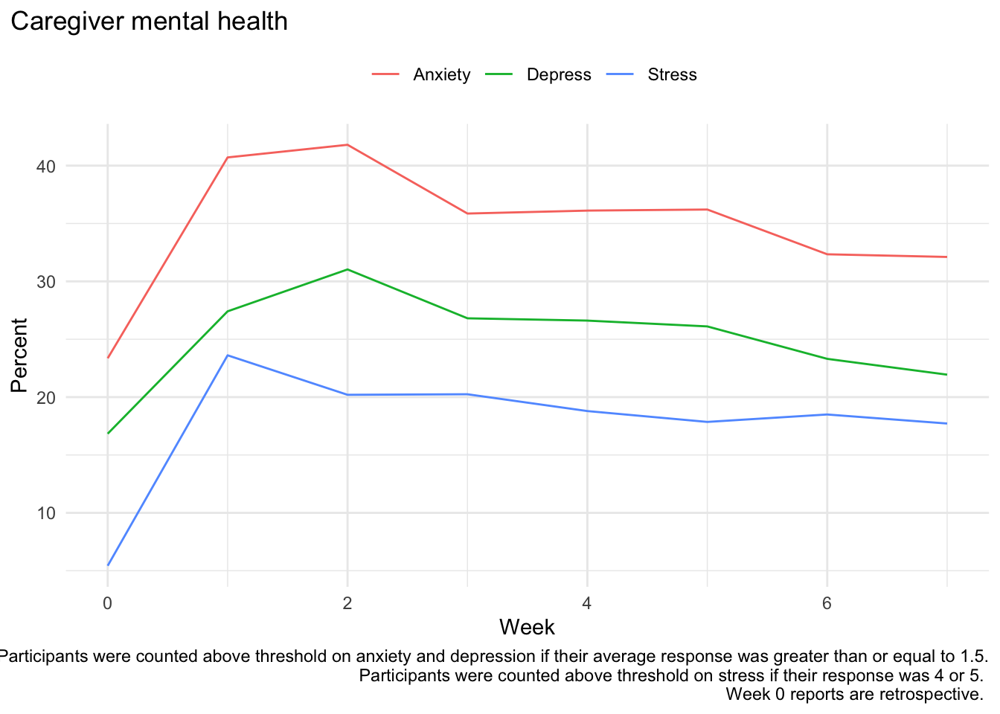
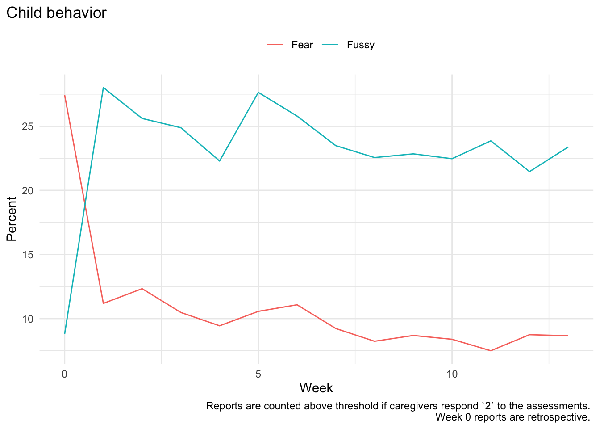
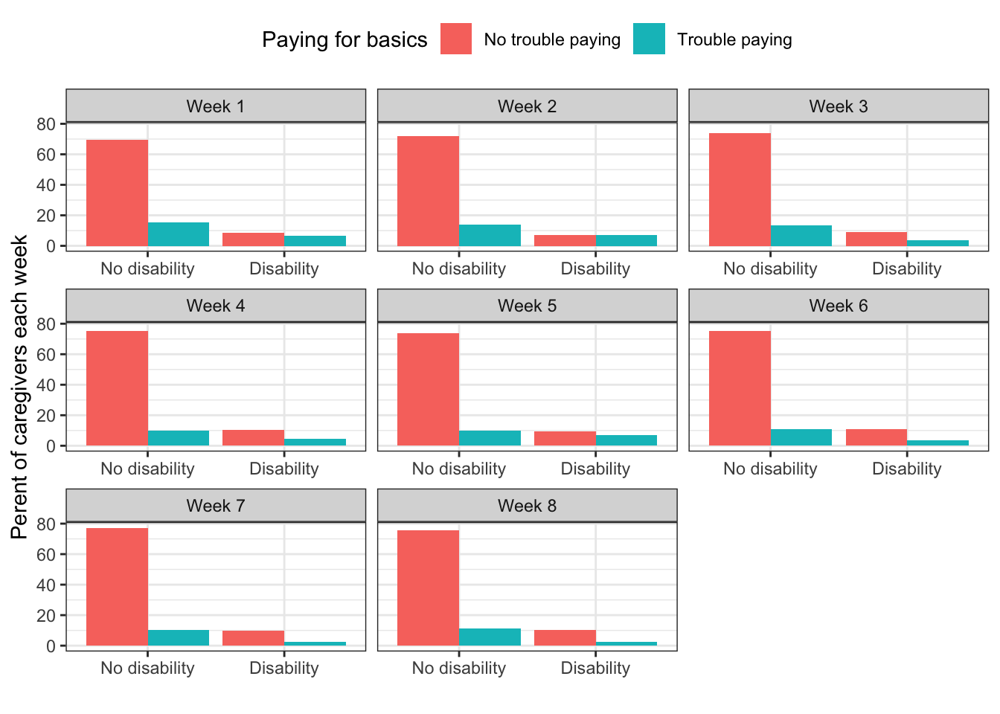

| statistic | Week 0 | Week 1 | Week 2 | Week 3 | Week 4 |
|---|---|---|---|---|---|
| Anxiety | |||||
| Number above threshold | 603 | 322 | 418 | 317 | 303 |
| Total Respondants | 2475 | 791 | 1000 | 884 | 839 |
| Percent above threshold | 24 | 41 | 42 | 36 | 36 |
| Depression | |||||
| Number above threshold | 433 | 216 | 310 | 237 | 223 |
| Total Respondants | 2474 | 788 | 999 | 884 | 838 |
| Percent above threshold | 18 | 27 | 31 | 27 | 27 |
| Stress | |||||
| Number above threshold | 143 | 187 | 202 | 179 | 156 |
| Total Respondants | 2467 | 792 | 1000 | 884 | 830 |
| Percent above threshold | 6 | 24 | 20 | 20 | 19 |
| Note: | |||||
|
Participants were counted above threshold on anxiety and depression if their average response was greater than or equal to 1.5. Participants were counted above threshold on stress if their response was 4 or 5. Week 0 reports are retrospective. |
|||||

| statistic | Week 0 | Week 1 | Week 2 | Week 3 | Week 4 |
|---|---|---|---|---|---|
| Fussy | |||||
| Number above threshold | 622 | 85 | 119 | 92 | 79 |
| Total Respondants | 2444 | 760 | 965 | 878 | 837 |
| Percent above threshold | 25 | 11 | 12 | 10 | 9 |
| Fear | |||||
| Number above threshold | 206 | 218 | 252 | 219 | 187 |
| Total Respondants | 2474 | 778 | 984 | 880 | 839 |
| Percent above threshold | 8 | 28 | 26 | 25 | 22 |
| Note: | |||||
Reports are counted above threshold if caregivers respond 2 to the assessments. Week 0 reports are retrospective. |
|||||
| Week | Caregivers of Children with Disabilities | Caregivers of Children without Disabilities | Total Respondants |
|---|---|---|---|
| 1 | 114 | 678 | 792 |
| 2 | 140 | 860 | 1000 |
| 3 | 107 | 784 | 891 |
| 4 | 110 | 731 | 841 |
| Week | Caregivers with difficulty | Caregivers without difficulty | Total Respondants |
|---|---|---|---|
| 1 | 174 | 618 | 792 |
| 2 | 209 | 791 | 1000 |
| 3 | 151 | 740 | 891 |
| 4 | 119 | 722 | 841 |
| Week | No difficulty | Difficulty | No difficulty | Difficulty |
|---|---|---|---|---|
| 1 | 62 | 52 | 556 | 122 |
| 2 | 69 | 71 | 722 | 138 |
| 3 | 75 | 32 | 665 | 119 |
| 4 | 80 | 30 | 642 | 89 |
| Week | No difficulty | Difficulty | No difficulty | Difficulty |
|---|---|---|---|---|
| 1 | 7.8 | 6.6 | 70.2 | 15.4 |
| 2 | 6.9 | 7.1 | 72.2 | 13.8 |
| 3 | 8.4 | 3.6 | 74.6 | 13.4 |
| 4 | 9.5 | 3.6 | 76.3 | 10.6 |
